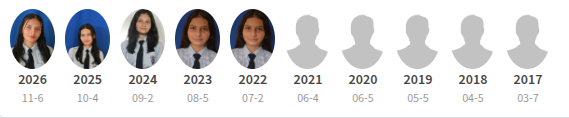

Cursé parte de mi educación primaria (preescolar, primero y segundo) en el Colegio Antonio Nariño - Sede Mis Alegrías, ubicado en Cúcuta, Norte de Santander.
Posteriormente culminé mi primaria (tercero, cuarto y quinto) en el Colegio San José de Guanentá - Sede D Sagrada Familia.
Mis estudios de secundaria, desde grado sexto hasta la actualidad en grado 11°, los he realizado en el glorioso Colegio San José de Guanentá, en su sede principal de Bachillerato Técnico. Actualmente pertenezco al curso 11-6, en la especialidad de Sistemas.
Me considero una estudiante responsable con mis obligaciones académicas. Aprendo con facilidad y mi materia favorita es Inglés. También soy proactiva y me gusta participar en las actividades institucionales, como los campeonatos de microfútbol, donde fui campeona interclases, además de participar en bailes y otras actividades organizadas por el colegio.
Me gusta estudiar y aprender cosas nuevas día tras día, ya que considero que el conocimiento es una herramienta fundamental para alcanzar mis metas y cumplir mis sueños.